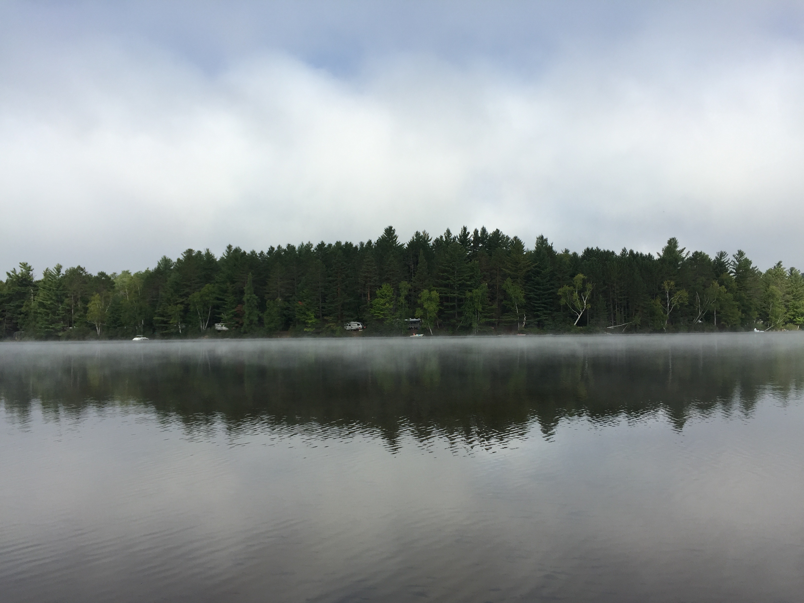

Staying Current in Science
One of the most important things we do as scientists is stay current with the advances in our field. It's important to know where your own work stands in relation to others, to be aware of how novel your work is, and to read to find inspiration and new ideas. My approach is to look at information from a variety of sources; peer-reviewed journals, blogs, and social media. I thought I would highlight how I stay current with the literature, and where else I look for the latest in science.
Journals
I use email alerts for the journals that I like to read. It can be overwhelming to receive so many emails but when I'm disciplined I leave them in my inbox and go through them once or twice a day.
There are a handful of ACS journals that I try to stay current with.
- Journal of the American Chemical Society
- Journal of Chemical Theory and Computation
- Journal of Physical Chemistry B
- Journal of Chemical Information and Modeling
Of course I enjoy skimming through Science and Nature every week. Even if I don't find articles with direct relevance to my work there's almost always some interesting science to read about. The editorials or career stories are things I really enjoy. Cell is another 'big' journal (high impact factor) that rarely has work I'm interested in but I skim the table of contents anyway.
- Science
- Nature
- Proceedings of the National Academy of Science
- Cell
Since I'm interested in structural biology and biophysical chemistry I try to stay current with the following journals.
- Structure
- Nature Structural and Molecular Biology
- Biophysical Journal
Besides the others listed above I try to follow journals with computational chemistry research.
- Journal of Computational Chemistry
- PLoS Computational Biology
And then there are a number of other journals that keep me up to date with topics including drug discovery and nucleic acid research.
- Nucleic Acid Research
- Nature Review Drug Discovery
- Journal of Chemical Physics
- Nature Chemistry
- Drug Discovery Today
I'm not suggesting that I read all of these journals but I do try to skim the TOC or receive email alerts from all of them and then follow up on articles that look interesting.
Blogs
There are some great blogs out there that provide perpsective on the latest in science. This is a list of ones I find interesting, and there are probably many more depending on your specific areas of interest. Look around and explore you may be surprised to find some very good science writing out there.
- In the Pipeline
- The Curious Wavefunction
- NIH Director's Blog
Here are a few blogs/news sites that I often look at. Although my ACS membership has lapsed I'll include C&EN, I miss reading it.
- Nature.com blogs
- formerly known as Science Insider but now just the main page for Science mag
- Chemistry and Engineering News from ACS (C&EN)
Social Media
I follow a lot of scientists and science-rlated content on Facebook and Twitter. In the past I made lists on Twitter to keep track of who I was following in these categories but I've neglected to update the lists in a long time. Science journals use social media to highlight important articles, parody accounts can provide comic relief, and you can get some instight into ho other scientists think and use social media from following their acounts.
Work, work, work, work, work
So far my posts have been about my weekend getaways and life outside of lab but I hope to have some more science and/or work-related content soon.
Adirondacks
The end of summer. Days are noticeably shorter, nights cooler, and leaves begin to fall. In the past, autumn has been my favorite season, and I actually look forward to winter. So, typically I'd be excited about fall, but with the quick transition from graduate school to beginning my postdoc I've been wanting to hold onto summer, to enjoy the long, sunny days, and spend more time at the beach. Trouble is, I feel drawn to lab, anxious to get results and gain expertise in my new area of research. But with my desire to squeeze a little more out of summer, and Sarah starting a new teaching job after Labor Day, we decided to head for the mountains. Wait, there are mountains in New York?
Of course there are mountains in New York! I've even been to them once when I was a kid, but due to recent bias from living near the Cascade then Wasatch Mountains, I didn't really consider the Adirondacks to be mountains. More rolling hills, with lakes. Beautiful in my mind, for sure, but not mountainous. Well, there are mountains, and turns out they're a lot of fun.
We skipped town Friday afternoon and headed to the north country. Our destination was a state campground west of Saranac Lake. We expected traffic since it was Labor Day weekend and though it was heavy it wasn't awful, but we were looking at 7 - 8 hours in the car. We made a quick detour to Saratoga Springs to walk the dog, fill up on coffee, and to show Sarah one of my favorite small cities in New York.
We cut west through the Adirondacks, passing by Long Lake then Tupper Lake and felt worlds away from hustle and bustle of home as we drove through small settlements, lakeside camps, and finally to our campsite for the weekend at Fish Creek Pond. There are hundreds of campsites here and we expected it to be full, which it was, and nearly all RVs. We were in a small two-person tent and have no desire for an RV, although we talked a little about buying an old campervan or converting a minivan as an adventure vehicle. Regardless, we arrived at the site as the sun was setting and had a small fire as we set up camp.
One of the strangest things I've experienced while camping happened on our first night. It began to rain, or more accurately, it sounded like it began to rain. I woke up in the very early hours of the morning so confused, the weather forecasts had predicted clear skies and little chance of rain. But drops were hitting the tent creating the unmistakable sound of light rain. And when the morning came and we finally clambered out of the tent, everything was wet, like it had rained. There was also a thick fog, and we now believed, what sounded like rain was actually a very heavy mist that collected in the valley and around the lake where we camped while the air above was cold and clear. The mist was so thick it either mizzled, or condensed on the trees before falling to the ground. By mid morning the mist had burned off and the day, as well as the rest of the weekend, was clear and sunny. Nothing got all that wet and so the "rain" didn't affect the weekend, but it was strange.
Camp in the morning

View across the lake from camp site
We planned two hikes for the trip, one up Cascade and Porter peaks, the other a loop up and around Big Slide. Cascade and Porter was a moderate half-day hike, which we did on Saturday. The view from Cascade was magnificent. The trail was quite crowded but we expected crowds over the holiday weekend, so it didn't bother us. We attempted Big Slide on Sunday but it turns out that we hadn't planned appropriately. The trailhead to Big Slide is extremely busy because it is the sendoff for multiple trails into the high peaks district and there was limited parking. We saw signs on the way up that the lot was full and when we arrived there was a state trooper enforcing order. There's a shuttle that runs to the trailhead from a few miles away, which would have been a fine option if we had planned for that, but due to the day slipping away from us we decided to find a shorter hike elsewhere and return better prepared for Big Slide another day. We actually tootled around the beautiful Keene Valley for a bit, going to the farmers market and the Mountaineer gear shop. Then we headed toward Ampersand mountain and on our way stopped to wander around the town of Saranac Lake. Ampersand was a great hike rewarded with incredible views from the summit.

Pano from top of Cascade
All smiles on the Cascade summit
Beautiful views from Ampersand
All of that hiking inspired a deep hunger and thirst in the belly. We found the Pickled Pig in Lake Placid Saturday after hiking Cascade and Porter. We just stopped in for a beer the first night, but on Sunday we went back for dinner and beer. The brisket sandwich that I had was amazing and Sarah's fish fry was also excellent. They had an exceptional beer selection, it was not a long list, but all high quality beer and cider. I indulged in a few Sixpoint Resin double IPAs (9.1% ABV and over 100 IBUs!) and Sarah had a Naked Flock hard cider. We had fun walking around Lake Placid and people watching on the busy holiday weekend.
Food and drinks at the Pickled Pig in Lake Placid
Monday morning we woke up and headed back toward home. I was concerned about deteriorating driving conditions as we approached Long Island due to Hermine, but the storm ended up having little impact besides some stiff winds Monday night into Tuesday.
In the end, it was a great trip for me. I was really unprepared for the end of summer and not looking forward to shorter days and cooler temps. But after the trip to the Adirondacks, I really had a mental shift, and now feel content to be transitioning to autumn and the winter ahead.
Frankie conked out on the ride home
Pretty much sums up how we all felt by the end of the weekend
Slide Mountain, Catskills
Where will we play? Was one of the important questions we asked ourselves as we considered moving from the outdoor paradise of Utah to not-quite-sure-what-to-expect-but-lots-of-people-and-no-mountains Long Island for my postdoc position at Stony Brook University. What kind of hiking will there be? Can we go trail running? Are there even trails there? What about camping, skiing, biking, and fishing? Many of the things we loved about living in the American west, not just Utah, but also Oregon where Sarah grew up and I lived from 2004 to 2011, would suddenly be absent from our lives (or at least more challenging to access). Moving to New York was going to bring lots of changes for us, and much of it wanted, but we also knew we'd be missing out on some of what makes us happiest, being outside and away from the crowds and traffic of modern life.
After moving into our home near the university we began to explore our surroundings. We arrived early in the summer and it was hot and humid (so, so humid). We heard a lot about the beaches and decided to get after some sand and surf. It didn't take us long to fall in love with the beaches on Long Island. Our first beach day was at Robert Moses State Park on Fire Island and it was awesome, swimming in the Atlantic on a hot summer day is about as refreshing as it gets. Shortly after we ventured further east to the Hamptons and had another great day (except for the traffic on the return home). The sandy beach was beautiful, the swimming was fun, and lazing on the beach fantastic. As great as the beaches are (north shore beaches are pretty good too), we needed to get away from the crowds and into the more familiar arena of hiking. Fortunately, the Catskills are not too far away for us weekend warriors, so we picked a hike and headed upstate in mid-August.

Day at the beach
Our first trip took us to Slide Mountain, the highest peak in the Catskills at 4,180 ft. For reference, the valley floor of Salt Lake City sits at 4,500 ft. and the peaks in the Wasatch outside SLC rise above 10,000 ft. So Slide Mountain was going to be something a little different than we're used to, but I went with an open mind and the desire to explore.
Wasatch Mountains loom over Salt Lake City.
Do we miss them? Yeah, we miss them.
The Slide Mountain trailhead has ample parking under a canopy of beautiful hardwood forest. We decided to follow a recommended route that is longer to the top but more interesting and scenic, rather than the straight climb to the summit. It was a hot, humid day with heat indices in the city soaring above 100, and although it was much cooler in the Catskills, the forest felt like a sauna and moisture from recent rain showers really made the forest feel tropical. Everything was a lush green and the sweet forest air a treat to breathe in. The maple and birch were splendid and the spruce forest at higher elevation was really beautiful. Fortunately, I love the forest and the hike through the woods provided plenty of scenery for me, because there weren't many scenic viewpoints. There are some nice overlooks but they've mostly had foliage grow up and block the view as described in the trail guide. Just below the summit, however, there's a nice view of the surrounding mountains and another just past the summit. The summit itself doesn't have any views, just the remnants of an old fire tower.
Signage
It's 2.7 mi directly to the summit, but we took the 4.0 mile route up and returned via the 2.7 mi route

View from near the Slide Mt. summit
The loop we traveled was rumored to be less popular than straight up and down and I'd say this was true, before getting to the main up/down route we ran into just two other groups of hikers. The route down followed the more popular trail and we saw about 10 other groups of hikers, so the trail was in no way crowded but the longer loop even less so. This was great for us and made us thankful we had made the effort to get out hiking. Being on the trail was such a relief, a stress reducer, and provided fresh perspective on our time in New York. The Catskills are beautiful and I'm really looking forward to returning for the Autumn colors, a northeast spectacle that Sarah has yet to witness in person.
Our trip to Slide Mountain inspired us to plan more trips to the Catskills and beyond to the Adirondacks. We also plan to explore parks along the Hudson that are a little closer to home: Harriman, Bear Mountain, and Hudson Highlands to start. I can hardly wait until the weekend!
The story isn't complete without mention of Frankie, the Beagle/Foxhound mix that we recently adopted. This was her first big hike and she was a champ. Here she is in bed after a long day on the trail.

Frankie resting after a big hike
Welcome
Welcome to my blog. I'm a postdoctoral researcher at Stony Brook University where I am supported by an NIH IRACDA NY-CAPS fellowship. I'll be doing research under the mentorship of Ken Dill and gaining undergraduate teaching experience at one of three partner institutions: Suffolk Community College, SUNY Old Westbury, or Brooklyn College.
I earned a B.S. in Chemistry from Southern Oregon University in 2011, then went on to the University of Utah, where I worked in Tom Cheatham's lab and was awarded a PhD in May 2016. My wife and I moved from Utah to Long Island early this summer and look forward to making the most of our opportunities here before moving on to our next adventure.
This is my first blog post and I hope there are many more. I expect to post on a number of topics ranging from my experiences as a postdoc to my interests outside the lab such as the outdoors, cooking, and plain old life in general. Like the beginning of any journey, I can set a course but only time will tell where I'll end up, so let's hope for a grand excursion.